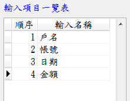
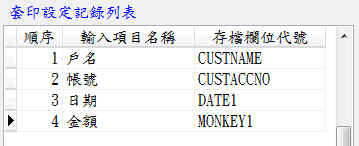

套印記錄存檔管理–視窗功能說明
1.輸入項目一覽表與存檔設定一覽表，其內容係參考輸入設定視窗裏面的設定。
2.無順序編號：由輸入設定視窗加入的項目。
3.有編號編號：為可套印的項目。

輸入項目一覽表 存檔設定一覽表
存檔欄位一覽表：系統預設的存檔欄位
存檔欄位一覽表
輸入項目與存檔欄位使用說明：
1.數量必需一致，列如各4個。
2.類型要一致。例如日期，就只能配合日期一、日期二，配對錯誤，系統可能會產生錯誤。
原則上覺使用日期一，如有第二個日期再使用日期二
3.同類型的表格設定最好一致，例如支票，到期日固定用日期一，不然整合性查詢時會產生
困擾。例如設定3家銀行的支票，如果有一家的日期設定為日期一，另外二家設定為日期二，
雖然各別查詢沒有問題，但是無法以日期作為條件，對3種支票進行整合性查詢。
輸入項目與存檔欄位配對設定